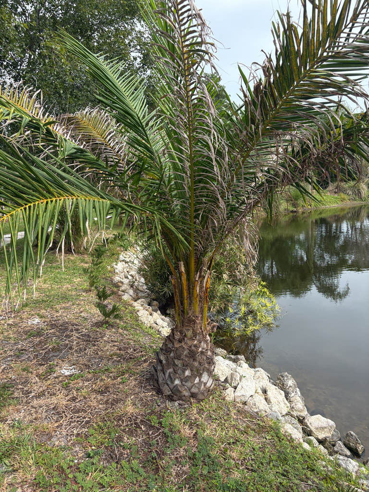

- The tree in front of you is probably already in your pocket. Palm oil appears in roughly half of all packaged supermarket products worldwide — lipstick, ice cream, soap, instant noodles — yet almost no one who uses it daily could pick the source tree out of a lineup. Now you can.
- A single oil palm fruit contains two completely different oils: one pressed from the soft orange-red pulp, another extracted from the hard kernel inside. Different chemical profiles, different industries — one tree, two global supply chains, one piece of fruit.
- In West Africa, chimpanzees have been documented cracking open oil palm nuts with stones — one of the clearest examples of tool use ever recorded in a non-human animal.
- When Southeast Asian plantations were established, the palm's native pollinating weevil was left behind in Africa. For decades, workers had to pollinate every flower by hand. Reuniting the palm with its tiny partner, Elaeidobius kamerunicus, in 1981 ended that labor almost overnight.
The African Oil Palm is native to the humid lowlands of West and Central Africa, ranging from Senegal south to Angola and east to the western shores of Lake Victoria. In its home landscape it favors riverbanks, freshwater swamps, and forest margins — places where moisture is reliable and sunlight reaches the ground.
Archaeological evidence places palm oil in West African diets at least 5,000 years ago, making this one of the longest-used crop plants on Earth. Portuguese sailors encountered it in the 15th century, and by the early 1800s palm oil had become a valuable export commodity, first for soap and candle manufacturing and later as an industrial lubricant during Britain's Industrial Revolution.
European colonial enterprise carried the palm to Southeast Asia in 1848, and commercial plantations followed. Today Malaysia and Indonesia together account for roughly 85 percent of global production, on more than 19 million hectares of cultivated land. In Florida, the tree appears occasionally as a botanical curiosity and ornamental specimen, thriving in the warmest southern parts of the state.
- The genus name Elaeis comes from the Greek word for oil — elaion — a straightforward nod to the palm's defining product. The species epithet guineensis refers to the Gulf of Guinea coast, the heartland of its native range. It is one of two species in the genus; its closest relative, the American Oil Palm (Elaeis oleifera), grows wild in Central and South America.
- The palm is a masterclass in chemical efficiency: a single fruit yields two oils with genuinely different characters. The red-orange pulp produces crude palm oil, rich in saturated fats and naturally stable at room temperature, which is why it anchors so many shelf-stable foods.
- The hard kernel inside yields palm kernel oil — closer in composition to coconut oil — used heavily in confections and pharmaceuticals. Two industries, one piece of fruit.
- The palm is monoecious — male and female flowers grow on the same tree — but they open at different times, so cross-pollination between trees is required for reliable fruit set. Both male and female inflorescences emit an anise-like scent that draws the weevil Elaeidobius kamerunicus, which breeds in spent male flower clusters and carries pollen to receptive female flowers.
- When oil palm plantations were established in Southeast Asia, that weevil was left behind in Africa. For decades, hand-pollination was the only solution — workers with pollen puffers dusting every female flower across millions of hectares. Introducing the weevil to Malaysia in 1981 ended the practice almost immediately and produced a dramatic increase in fruit yield.
In its native West and Central Africa, the African Oil Palm supports a notable community of wildlife. The palm-nut vulture (Gypohierax angolensis) is so dependent on the fruit that it makes up more than 60 percent of an adult bird's diet — an unusually tight ecological bond between a large raptor and a single plant.
Grey parrots, long-tailed parakeets, and various fruit bats also feed on the ripening drupes, and the dense crown provides nesting and roosting cover.
Pollination in the wild falls primarily to the weevil Elaeidobius kamerunicus, drawn in by the anise-like scent emitted by both male and female inflorescences. The weevil breeds in spent male flower clusters, picking up pollen and carrying it to receptive female flowers. Honeybees also visit for pollen, though their contribution to fruit set is considered secondary.
In Florida cultivation, this palm has no co-evolutionary history with local fauna and functions primarily as a structural feature rather than a wildlife hub.
The palm is monoecious, bearing separate male and female inflorescences on the same tree, but the two sexes open at different times — a system that promotes cross-pollination between individuals. Both types emerge from the leaf axils close to the trunk and are large, head-like, and dense, with spiny-tipped branches.
Male inflorescences carry hundreds to over a thousand small flowers and release pollen over roughly five days; female flowers are receptive for only 36 to 48 hours.
Fruits are small ovoid drupes, about 1.5 to 2 inches long, borne in massive clusters that can weigh 10 to 50 kilograms. They ripen from green to deep orange-red. Each fruit contains a fibrous, oil-rich pulp (the mesocarp) surrounding a hard seed — the kernel — which is itself rich in a second, chemically distinct oil. First fruit typically appears three to four years after planting.
Pinnately compound, 10 to 16 feet long, with 200 to 300 narrow leaflets arranged along the rachis. The lower leaflets are physically modified into stiff, sharp spines along the petiole margin — the palm's armor for its oil-rich fruit clusters. Mature palms carry 35 to 50 functional fronds at any time, with new growth emerging every two to three weeks from the central growing point.
Solitary and stout, covered above by persistent old leaf bases and bare below, where rings mark the points of attachment of shed fronds. Trunk color is dark gray-brown. In cultivation the palm can eventually reach 65 feet or more, though growth is slow in Florida's marginal climate for this species.
The trunk is the first landmark: stout, dark gray-brown, ringed at the base where old fronds have fallen and shaggy toward the crown where leaf bases still cling. Then look lower, at the base of the frond petioles — the leaflets there have been modified into rigid, dagger-like spines, the palm's defense system for its valuable, oil-rich fruit.
If the palm is fruiting, look for the enormous, dense clusters of orange-red oval drupes crowded among the leaf bases close to the trunk; each cluster is heavier than it looks. The fronds themselves are long, arching, and deep green, with leaflets arranged in a feathery pattern similar to a coconut palm but noticeably denser.
The spines along the petiole margins are the main physical hazard here — they are stiff and sharp, and working close to the fronds without gloves is inadvisable.
The fruit is technically edible: palm oil pressed from the pulp is a globally traded food ingredient, and the kernel yields a second edible oil. Neither the raw fruit nor the kernel is something you would simply eat off the tree, however — commercial extraction involves industrial processing. No known toxicity to people or dogs.
Palm oil's modern footprint is enormous and controversial. Rapid plantation expansion — particularly in Malaysia and Indonesia — has driven large-scale deforestation, habitat loss for orangutans and other wildlife, and significant carbon release.
This specimen is a tender tropical giant pushing its absolute geographic limits. The African Oil Palm is cold-sensitive and best suited to USDA Zone 10b and warmer; the tree at Palma Sola Botanical Park sits near the northern edge of where it can be reliably grown in Florida.
That is precisely why it grows so much more slowly here than on the vast plantations of Indonesia — what you are looking at is a horticultural achievement as much as a botanical specimen.


- © Randall Carter (CC-BY-NC), via iNaturalist